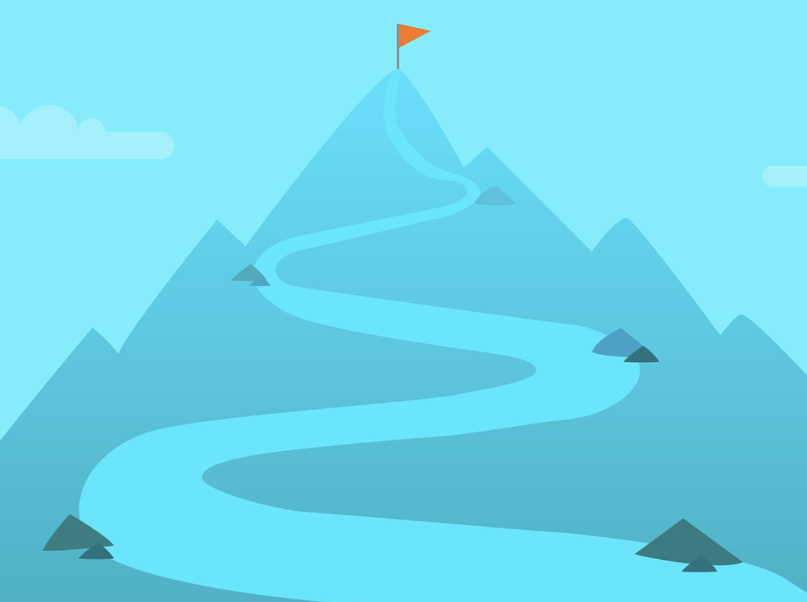

5 nemme råd til mere motion i din hverdag

En lille guide til hvordan du nemt kan få mere motion ind i din hverdag. Det er ikke hver dag man har alt tid i verden.
Med disse få nemme råd, kan du være sikker på at få motion, selv de dage hvor du har travlt
- Hold dig fra elevatorne i en hel dag. Gør dine ben en tjenste og brug i stedet for trapperne.
- Lad buskortet eller bilnøglerne blive hjemme. Cykel på arbejde eller i skole. På den måde styrker du kroppen og skåner naturen.
- Forsøg at gå en tur hver anden dag, det er op til dig selv at bestemme hvor langt eller hvor lang tid du vil gå.
- Tag en tur i svømmehallen. Svømning er en af de former for motion som mindst belaster din krop, og en god måde at få brugt hele kroppen.
- Brug skridtælleren i din smartphone. Sæt nogle mål for hvor mange skridt du min. skal gå om dagen, og brug det som motivation.
Hensigten med disse råd er at man får implementerert mere motion ind i sin hverdag, måske endda en måde at starte på at motionere
hvis din hverdag er lidt travl og hektisk.